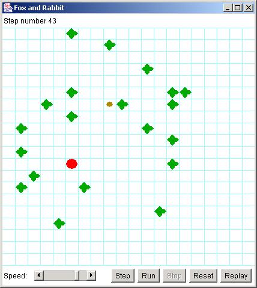

| CIT 591 Fifth Java Assignment: Rabbit
Hunt CIT 591, David Matuszek, Fall 2002 |
The purposes of this assignment are:
Here's the story:
A fox is hunting a rabbit in a field. The field contains a number of bushes which obstruct both the fox's view and the rabbit's view, so each may or may not be able to see the other. The fox tries to catch the rabbit; the rabbit tries to get away from the fox. If the fox can catch the rabbit, he eats it (and wins). If the rabbit can keep away from the fox for 100 turns, the rabbit wins.
You are the rabbit.
Getting started:
Download the RabbitHunt.zip file and unzip it. It's a BlueJ package, so you should be able to run it easily; you will see something like this:

The big red dot represents the fox, the small brown dot is the rabbit, and the green blobs are bushes.
Run the program a few times and see what happens. Notice that you can step through the hunt, or just let it run. You can adjust the speed at which the animation proceeds (this does not affect what happens, only how quickly it happens). Notice that the rabbit almost always meets an untimely end. However, occasionally the rabbit will evade the fox for 100 turns, and the rabbit wins--this doesn't happen very often.
Now look at the Rabbit class. It has a constructor Rabbit(model, row, column),
and it has a method decideMove(), which decides how the rabbit
is going to move at each turn. The rabbit I've given you is a really stupid
rabbit--it just moves randomly.
Your job is to improve the Rabbit class so that the rabbit escapes
more often. This is your class; you can do (almost) anything you want with it.
You can (and should!) look at all the other classes, but the Rabbit class
is the only one you are allowed to change (unless you get my permission, which
you won't get unless you have a very good reason). If you find errors or problems
in the other classes, let me know, and I'll post an updated version for everybody.
It is probably impossible to find a strategy for the rabbit that ensures a 100% survival rate.
Structure of the program
This program uses the Model-View-Controller design pattern. That is, there
are separate classes (which I have named Model, View,
and Controller just for pedagogical purposes--they could have been
named anything) that do the following:
ModelModel represents the "rules of the game." It
does all the computation, all the work of deciding whose turn it is, what
happens, and whether anyone has won. The Model is strictly "internal"--it
does the "thinking," and has practically nothing to do with the
other parts of the program.ViewView displays what is going on. It puts an image on the
screen so the user can see what is happening. The View is completely
passive; it does not affect the hunt in any way, it's just a news reporter
that gives you a (partial) picture of what is happening inside the Model.ControllerController is the part of the program that displays the
controls (the four buttons and the speed controls at the bottom of the window).
It knows as little as possible about the Model and View;
it basically tells the Model when to go and when to stop. It
does, however, display a message at the end of the game; this should probably
have been in the View class.The "Model" part of this program is actually composed of five
classes: Model (the "main" model class), Animal,
Rabbit, Fox, and Bush. Rabbit
and Fox are subclasses of Animal (as you can see from
the solid arrows in the BlueJ diagram); all other classes just extend Object.
This is the part of the program that you really need to understand. I'll describe
these classes briefly, just to get you started; but you should examine the code
to find out how it all really works and fits together.
The Controller and View classes are almost entirely
independent of the Model class. The Rabbit class is
part of the Model. This means that you do not have to understand anything
about either the Controller or the View in order to complete your assignment.
(It wouldn't hurt to look at them, however, because you will be learning how
to do similar things later in this course.)
The Hunt class just creates model, view,
and controller objects, and turns control over to the controller
object.
The Model class:
View to display the result of these two moves, andIn addition, Model provides several constants that you can use:
Model.Nindicates "north" (straight up) Model.NEindicates "northeast" (up and to the right) Model.Eindicates "east" (to the right) Model.SEindicates "southeast" (to the right and down) Model.Sindicates "south" (straight down) Model.SWindicates "southwest" (to the left and down) Model.Windicates "west" (to the left) Model.NWindicates "northwest" (up and to the left) Model.STAYindicates "no move" Model.MIN_DIRECTIONthe numerically smallest direction (not including STAY)Model.MAX_DIRECTIONthe numerically largest direction (not including STAY)Model.BUSHindicates a bush Model.FOXindicates a fox Model.RABBITindicates a rabbit Model.EDGEindicates the edge of the board
Finally, Model provides the following method:
static int turn(int direction, int amount)Other classes that form part of the Model are:
BushAnimalRabbit class and the Fox
class. It provides methods that are the same for both the rabbit and the fox:
looking in a particular direction, measuring the distance to an object, and
moving.FoxRabbitThe Animal class provides the following methods. Since Fox
and Rabbit are subclasses of Animal, they inherit
these methods, and can use them just as if they had defined the methods themselves.
int look(int direction)Model.BUSH, Model.FOX,
Model.RABBIT, or Model.EDGE, depending on what the animal
sees in that direction.int distance(int direction)boolean canMove(int direction)The part you have to write:
When it is the rabbit's turn to move, the model sends the message decideMove()
to the rabbit. The rabbit must return a direction in which to move. I
have written a Rabbit class, but my rabbit makes really stupid
moves. Your job is to fix the Rabbit class by replacing my
decideMove() method with a better one.
Note that the rabbit does not actually move itself. Instead, it responds
to the decideMove() message by returning the direction in which
it wants to move. The model will then move the rabbit in that direction, if
the move is possible and legal. If the move cannot be made (because of a bush
or the edge of the board), the rabbit will not move.
The contract:
I'm putting the complete source code up on the web, as it exists today. I may change it. I probably will change it. There are some things I don't like about my code, and I expect to give you a new, improved version. How can you write your assignment if my code keeps changing?
The answer is the contract. You are welcome to look at my code--in fact, much of the reason for this assignment is to get you to read someone else's code. I can change any part of my code in any way I like, so long as I satisfy the contract.
So, what is this mysterious contract? The contract is whatever I say about
the program in the javadoc comments. If I say in the javadoc comments that
the program does something, it had better do that thing. Anything I don't say,
I can change. For example, if I tell you in the javadoc comments that
Model.EDGE is the integer 2, then it has to remain a 2. If I don't say,
I am free to change it to be the integer 37 if I want to.
Contracts are necessary when more than one person is working on different parts of the same program. Your javadoc comments tell the world what to expect from your code. You have to say enough so that your code can be used by someone else. But equally important, you have to not say in the contract anything that your users don't really need to know, because everything that you tell them, you are committing to keep that way forever and ever.
A good craftsman knows his/her tools! Have you explored the BlueJ menus? In
particular, have you ever selected Interface from the drop-down
menu in an editor window? If not, now would be a good time to explore it.
Due date and grading:
Turn in your program via Blackboard by Friday, October 25, before midnight.
Your grade will be the percentage of times that the rabbit escapes the fox. You are expected to use good style, as defined by Rule 1.